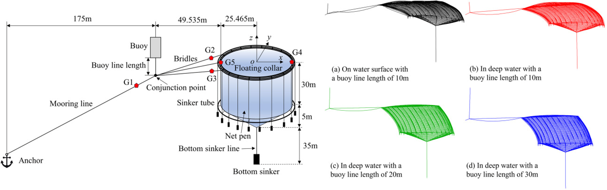

Dynamic analysis of submersible gravity-type fish cages with single-point mooring design

Abstract
This study presents a conceptual design for a cost-effective submersible gravity-type fish cage with a single-point mooring design. The performance of the new design in reducing environmental loads under extreme sea conditions is demonstrated using an in-house numerical code package. The effectiveness of the submerging and surfacing operations of the fish cages is validated through numerical simulations. In the present code package, irregular wave modelling is employed to generate the wave elevations, velocities and accelerations, and the hydrodynamic forces acting on the fish cages and mooring system are calculated using the Morison model. A submersible model for the floating collar is developed to simulate the submerging and surfacing operations of the fish cages. The deformations of the fish cage system are calculated using a modified extended position based dynamics (XPBD) method combined with a mode superposition method. Results show that tension in the mooring system is significantly reduced when fish cages are submerged in the water layer with lower current speeds, and extending the buoy line to lower the conjunction point helps maintain fish cages in the desired water layer under extreme sea conditions. Flooding the outer tubes of the floating collar allows the fish cages to smoothly submerge to the desired water depth. The surfacing designs based on the compressed air and the lifting operation of the bottom sinker can enable the cages to ascend to the water surface. The submerging and surface operations are proved to be completed within six minutes. The new design based on the lifting operation of the bottom sinker, is safer and more cost-effective than the design based on compressed air for the surfacing operation. The design of the submersible single-point mooring gravity-type fish cage is thereby validated through the present numerical methods, offering valuable insights for future aquaculture design and implementation.
Read the published article ↗